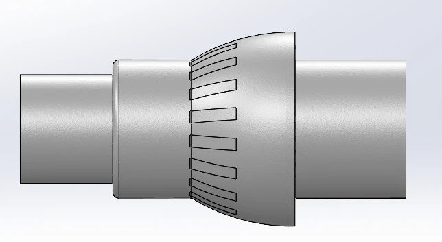
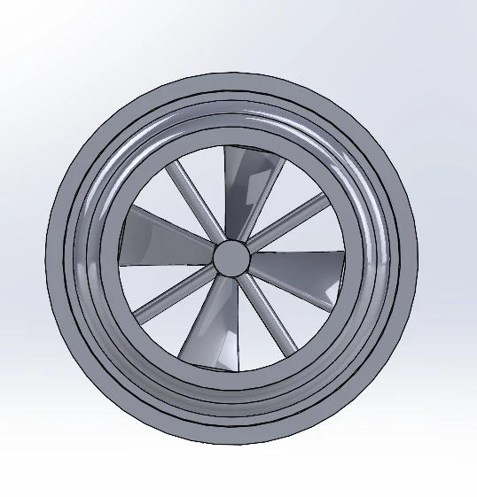
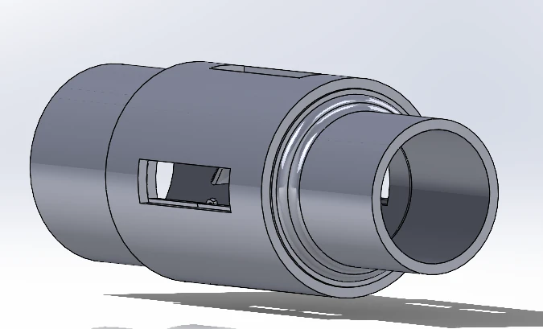
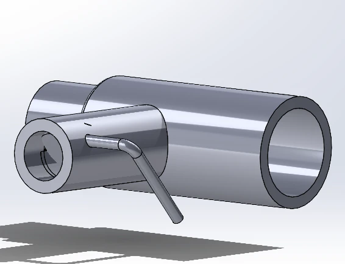
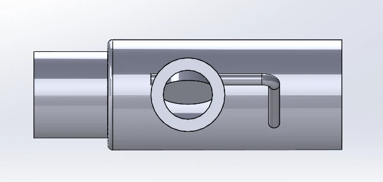
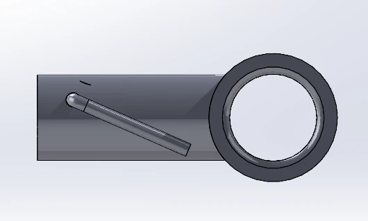
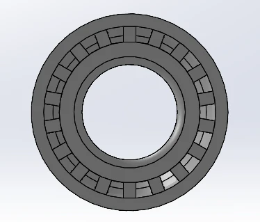
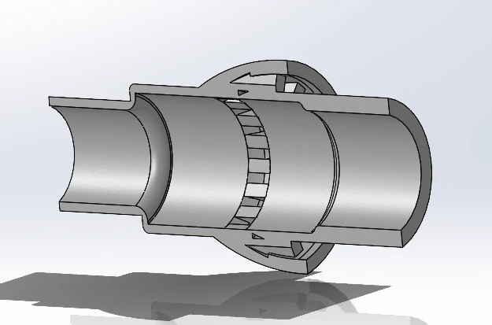

A better vent.
A simpler solution.
Three design iterations to keep a vacuum running while deflating inflatables, ending with a fixed bypass vent printed in ASA.

Final design, CAD side view. Designed by Murphy Roszak.
The final ASA-printed fixed vent resolved the recurring overheating issue in workplace use.
The problem
At work, we used a vacuum to deflate inflatables. The connection had a small inlet, which limited airflow even before the inflatable was nearly empty. During the last minute or two, the vacuum was pulling very little air, but we still needed to remove the remaining air before packing the inflatable away.
The vacuum kept overheating. My goal was to introduce bypass air while preserving its ability to fully deflate the inflatable. I explored two adjustable mechanisms before reassessing whether adjustment was necessary at all.
A twistable collar with a return force.
The first concept combined a rotating collar, internal blades, and rubber bands. Air passing the blades was intended to hold the collar open. As airflow decreased, the rubber bands would return it toward the closed position.
Pressure-difference issues made this approach unsuitable, so I moved on to a different mechanism.


A pressure-responsive relief.
Inspired by a mechanism I found in HVAC, the second design used a flapper with weights at the end of an external rod. The weight provided a closing torque. A sufficient pressure difference would overcome it and open the relief to outside air.
This version solved the overheating issue. In use, however, the vacuum inlet was already restrictive enough that the relief stayed venting almost continuously. The mechanism did not meaningfully switch between operating states.



Removing the adjustment.
I stepped back and compared the operating conditions. With such a small inlet, the airflow difference between the high-flow and low-flow portions of the task was small enough that an adjustable valve offered little practical benefit.
The final design uses continuously open vents around the circumference. A shaped passage is intended to guide incoming bypass air into the main airstream. It provides the needed venting without a collar, flapper, weights, or return mechanism.
I 3D printed this version in ASA and put it into use. It resolved the issue.


What each version taught me
| Design | Finding | Decision |
|---|---|---|
| Twistable collar | Pressure-difference issues with the proposed airflow-actuated mechanism. | Explore a pressure-responsive flapper. |
| Weighted flapper | Resolved overheating, but stayed venting during normal use. | Reassess the need for adjustment. |
| Fixed vent | Resolved the issue in workplace use. | Keep the simpler design without moving parts. |
The engineering takeaway
The most useful discovery was that the operating conditions did not require the mechanism I had been developing. Testing the second version helped me understand the actual requirement and simplify the final part around it.
CAD views supplied by Murphy Roszak. The result describes observed workplace use.